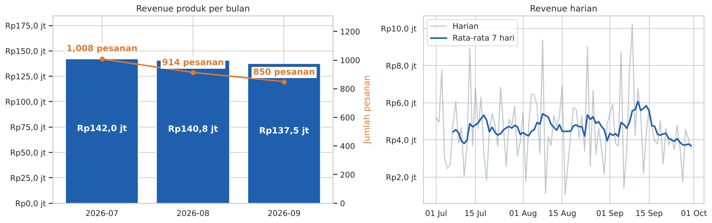
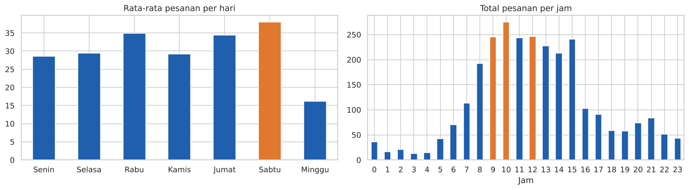
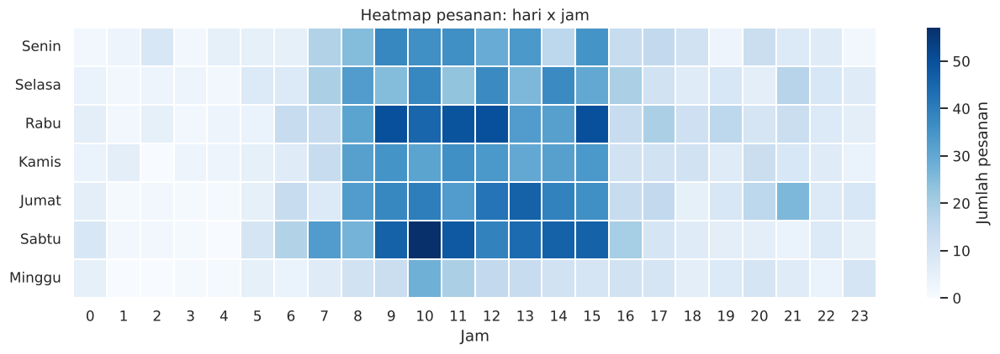
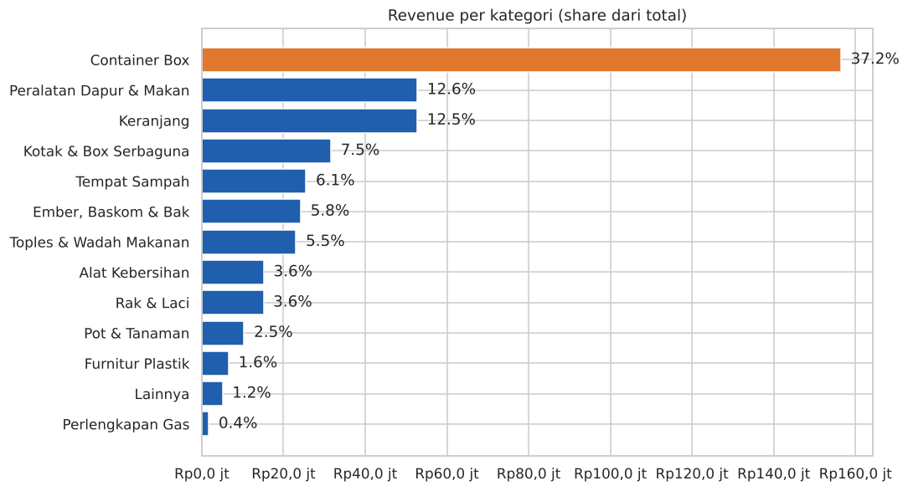
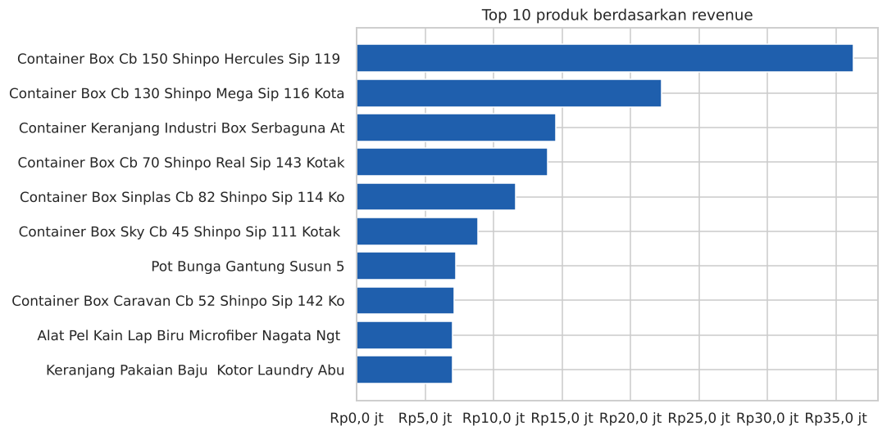
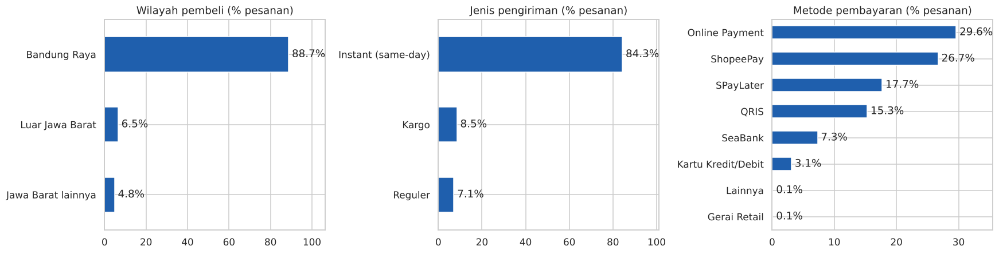
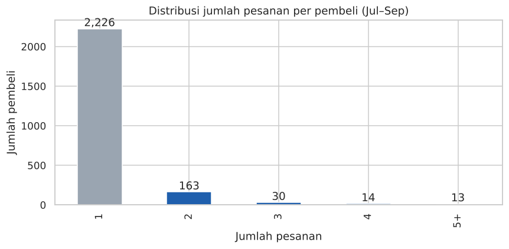
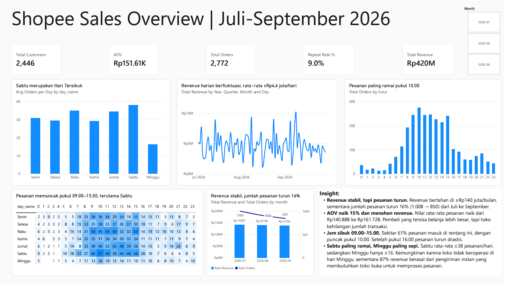
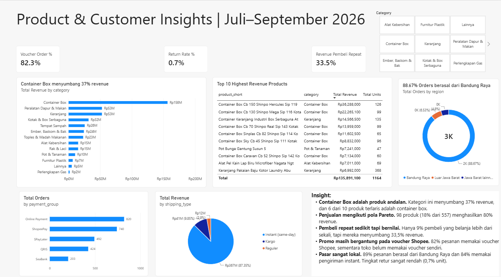

Ringkasan
- Revenue produk Rp420,3 juta dari 2.772 pesanan, dengan nilai rata-rata pesanan (AOV) Rp151.609.
- Revenue stabil, tetapi jumlah pesanan turun 16% dari Juli ke September. Revenue tertahan karena AOV naik 14,8%.
- Container Box menyumbang 37% revenue, dan 9% pembeli yang kembali berbelanja menyumbang 33,5% revenue.
Konteks dan masalah
Toko ini menjual perlengkapan rumah tangga seperti container box, keranjang, peralatan dapur, dan alat kebersihan melalui Shopee, dengan gudang di Bandung. Sebagian besar pesanan dikirim dengan kurir instan di hari yang sama.
Pemilik toko belum memiliki gambaran berbasis data tentang produk yang mendorong penjualan, waktu pembeli paling aktif, dan seberapa sering pembeli kembali. Akibatnya, keputusan stok, jadwal operasional, dan promosi masih dibuat berdasarkan perkiraan.
Pertanyaan analisis
- Bagaimana performa penjualan per bulan (revenue, jumlah pesanan, AOV)?
- Kapan (hari dan jam) pesanan paling ramai?
- Kategori dan produk apa yang menyumbang revenue terbesar?
- Dari mana pembeli berasal, dan bagaimana mereka membayar serta memilih pengiriman?
- Seberapa banyak pembeli yang kembali berbelanja?
- Seberapa besar retur, dan kategori apa yang paling sering diretur?
Data dan persiapan
Data berasal dari ekspor pesanan berstatus Selesai di Shopee Seller Centre: tiga file Excel (satu per bulan) dengan 51 kolom. Satu baris mewakili satu produk dalam sebuah pesanan.
| Item | Jumlah |
|---|---|
| Baris produk | 3.652 |
| Pesanan unik | 2.772 |
| Pembeli unik | 2.446 |
| Produk unik | 574 |
Langkah persiapan
- Anonimisasi. Nama, nomor telepon, alamat, nomor resi, dan catatan pembeli dihapus. Username dan nomor pesanan diganti ID anonim (CUST_0001, ORD_00001) sebelum data ditampilkan.
- Konversi angka. Kolom uang tersimpan sebagai teks dengan titik pemisah ribuan ("109.000"), sehingga dibaca sebagai teks lalu dikonversi ke angka.
- Validasi. Tidak ada duplikat, subtotal konsisten dengan harga × jumlah, dan semua tanggal terbaca.
- Feature engineering. Menambahkan bulan, hari, jam, 13 kategori produk (dari kata kunci nama produk), jenis pengiriman, kelompok pembayaran, dan wilayah.
- Tabel level pesanan. Kolom seperti total pembayaran dan voucher bernilai per pesanan, sehingga diringkas ke tabel terpisah agar tidak terhitung dobel.
Temuan
Pertanyaan 1: performa bulanan
Revenue stabil, tetapi jumlah pesanan terus turun

Revenue hanya turun 0,9% di Agustus dan 2,4% di September, tetapi jumlah pesanan turun dari 1.008 menjadi 850. Revenue bertahan karena AOV naik dari Rp140.888 ke Rp161.728. Pembeli yang tersisa berbelanja lebih besar, tetapi toko kehilangan jumlah transaksi.
Pertanyaan 2: waktu tersibuk
Pesanan memuncak pukul 09.00–15.00, Sabtu paling ramai


71,6% pesanan masuk pukul 08.00–16.59 dengan puncak pukul 10.00. Sabtu rata-rata 38 pesanan per hari, sedangkan Minggu hanya 16. Pola ini sejalan dengan pengiriman instan yang bergantung pada jam operasional toko.
Pertanyaan 3: produk dan kategori
Container Box adalah penggerak utama revenue


Container Box menyumbang 37,2% revenue dari hanya 38 produk, dan 6 dari 10 produk terlaris adalah container box. Penjualan mengikuti pola Pareto: 98 dari 557 produk (17,6%) menghasilkan 80% revenue. Karet seal tabung gas terjual paling banyak secara unit (1.675 unit) tetapi hanya 0,4% revenue, sehingga perannya lebih sebagai produk tambahan murah.
Pertanyaan 4: profil pembeli
Pembeli sangat lokal dan mengandalkan voucher Shopee

88,7% pesanan berasal dari Bandung Raya dan 84,3% memakai pengiriman instan. Metode pembayaran tersebar: Online Payment 29,6%, ShopeePay 26,7%, SPayLater 17,7%, dan QRIS 15,3%. Sebanyak 82,3% pesanan memakai voucher dari Shopee, sedangkan toko belum pernah memakai voucher sendiri.
Pertanyaan 5: pembelian ulang
Sedikit pembeli yang kembali, tetapi nilainya besar

Hanya 220 dari 2.446 pembeli (9,0%) yang berbelanja lebih dari sekali, tetapi mereka menyumbang 33,5% revenue. Nilai belanja per pembeli repeat sekitar Rp640 ribu, lima kali lipat pembeli yang hanya sekali berbelanja.
Pertanyaan 6: retur
Tingkat retur sangat rendah
Hanya 65 dari 8.823 unit yang diretur (0,74%), senilai Rp3,63 juta atau 0,86% revenue. Tingkat retur per unit tertinggi ada di kategori Ember, Baskom & Bak (2,1%) dan Alat Kebersihan (1,8%).
Dashboard Power BI
Dashboard dua halaman dibuat dari data yang sudah dibersihkan. Metrik seperti AOV, repeat rate, dan kontribusi revenue pembeli repeat dihitung dengan measure DAX sehingga ikut berubah saat filter bulan atau kategori dipilih.


Rekomendasi
- Jaga stok produk andalan. Container box CB 150, CB 130, dan CB 70 perlu diprioritaskan karena kehabisan stok di kategori ini langsung berdampak ke revenue.
- Uji voucher toko untuk menahan turunnya jumlah pesanan. Bandingkan jumlah pesanan sebelum dan sesudah voucher follower atau voucher minimal belanja diaktifkan.
- Dorong pembelian ulang. Kirim voucher pembelian berikutnya atau pesan tindak lanjut setelah pesanan selesai, karena pembeli repeat bernilai lima kali lipat.
- Sesuaikan operasional dengan jam ramai. Siapkan tim packing dan admin chat pukul 09.00–13.00, dan jadwalkan iklan atau flash sale di hari Sabtu dan Rabu.
- Naikkan nilai pesanan kecil. Tawarkan produk murah seperti karet seal gas atau toples sebagai bundling dengan produk utama.
- Periksa kualitas kategori dengan retur tertinggi. Cek barang ember, baskom, dan alat kebersihan sebelum dikirim, serta perkuat pengemasannya.
Keterbatasan
- Data hanya berisi pesanan selesai, sehingga tingkat pembatalan tidak bisa dianalisis.
- Periode tiga bulan belum cukup untuk menyimpulkan pola musiman.
- Kategori dibuat dari aturan kata kunci nama produk; kategori Lainnya hanya 1,2% revenue.